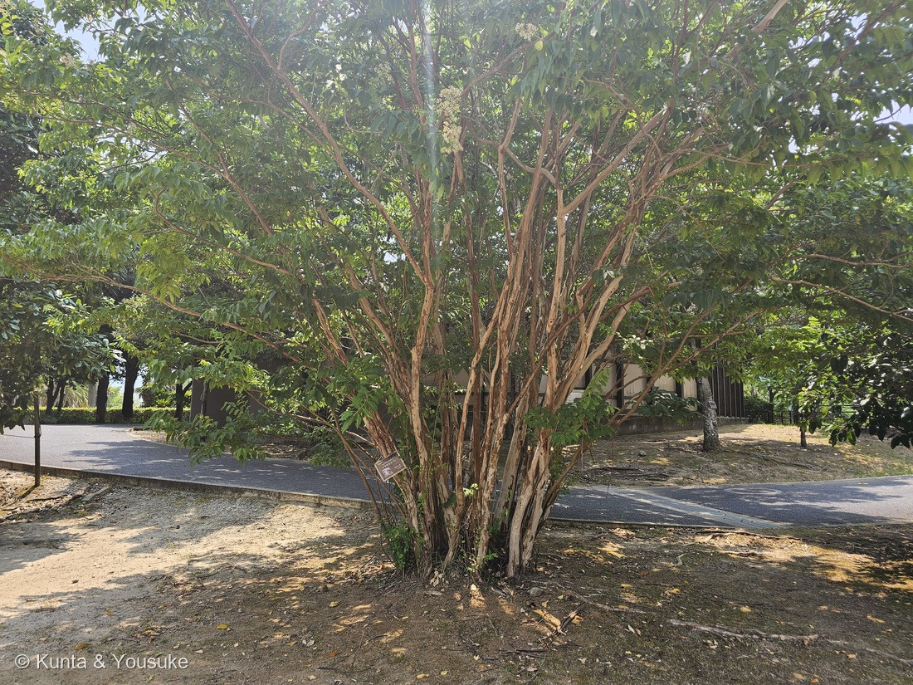
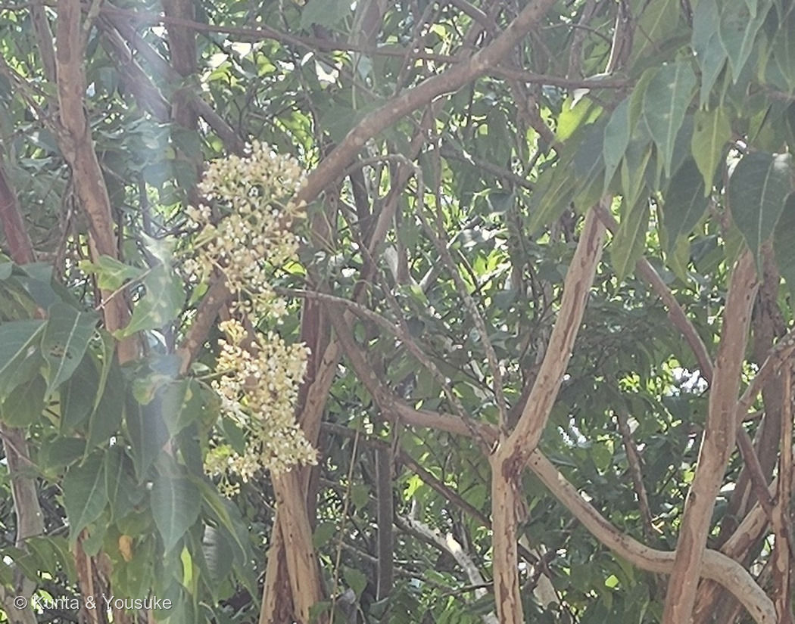
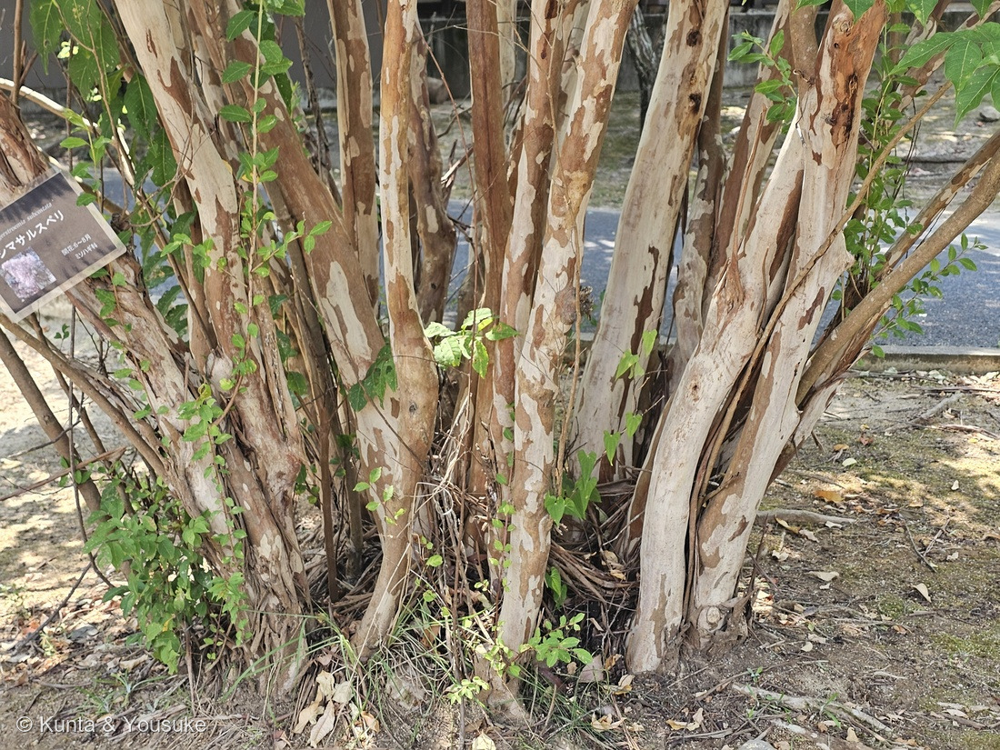
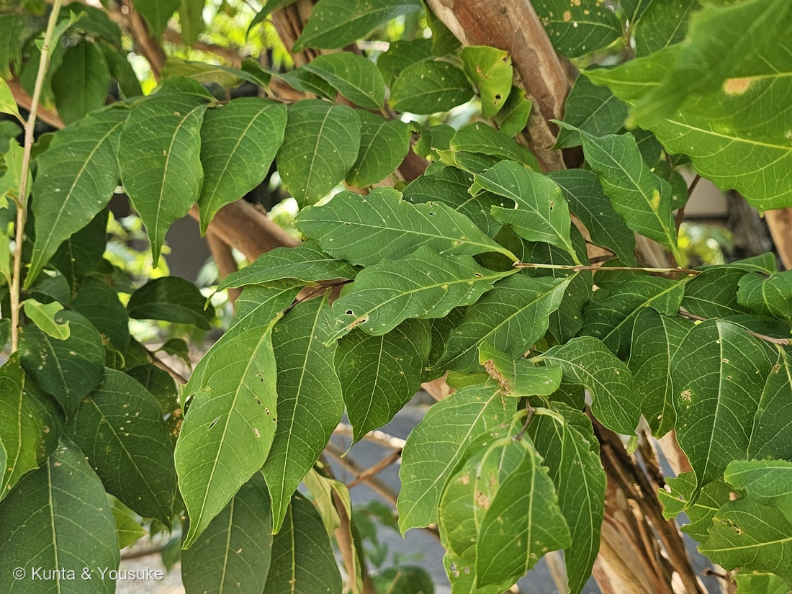
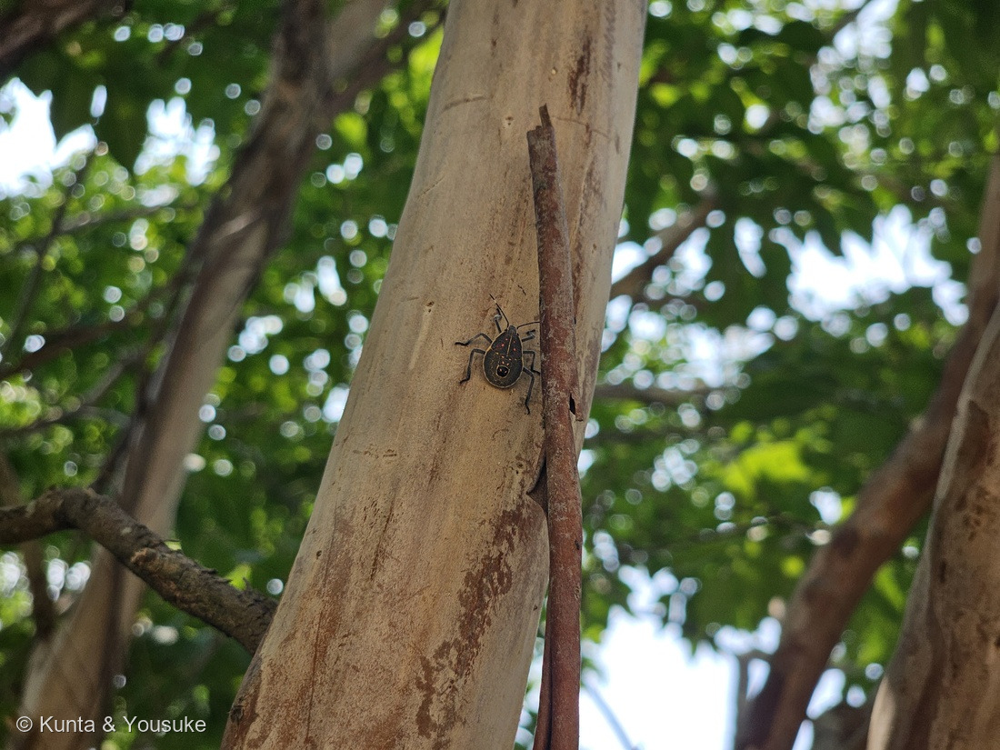

地図を読み込んでいるよ…
🔍 写真も地図も、押しているあいだ拡大して見られるよ（スマホは指を置いてすこし待ってね）。
🌍 の地図＝この子がもともと自生している場所を緑に。日本（鹿児島県大隅諸島・奄美群島）、中国、台湾（三河の植物観察）。くわしくは下の地図の説明を見てね。
⭐南の島と、その先の大陸・島の木だよ。三河の植物観察は「日本(鹿児島県大隅諸島、奄美群島)、中国、台湾原産」とする。⚠⚠日本のぶんは鹿児島県だけを塗った――大隅諸島も奄美群島も鹿児島県だから。⭐でも本土には自生していないので、この緑は「鹿児島県ぜんぶ」ではなく、県の南に散らばる島じまだと思って見てね。⚠中国のぶんも「中国原産」としか書かれていなかったので、南部のいくつかの省を塗ったもので、出典が名指ししたわけではないよ＝⭐ちがう読み方をしたので、正直に書いておくね。⭐⭐⭐そして、この地図でいちばん大事なのは「本州も四国も緑じゃないこと」＝ぼくらが会ったのは長崎の動植物園に植えられた木――⭐この子にとって、長崎はふるさとのすぐ外側なんだ。⭐⭐同じサルスベリ属の110 サルスベリは中国南部の子で、江戸時代より前から日本じゅうに植えられてきた――⚠いっぽうこの子は、三河いわく「サルスベリよりも高木になる」森の木で、本土の庭や公園ではめったに見かけない。⭐おまけのオオバナサルスベリは、さらに南のインド〜東南アジア〜北オーストラリア＝⭐⭐サルスベリ属の三人が、北から南へきれいに並ぶよ。
⚠ 地図は国（日本と中国だけ県・省）までしか塗れないから、ほんとうの分布より広く見えていることがあるよ。地図はだいたいの場所。正確なところは、上の文を見てね。
シマサルスベリ（島百日紅）
Lagerstroemia subcostata Koehne
⭐「シマ」は南の島々のこと ── 日本では鹿児島県の大隅諸島と奄美群島に自生 原産 日本（大隅諸島・奄美群島）・中国・台湾
ミソハギ科 · Lythraceae（サルスベリ属 Lagerstroemia・フトモモ目 Myrtales）── ⭐図鑑で3人目のミソハギ科（110 サルスベリ・128 ザクロ）／⭐⭐サルスベリ属は2人目＝110とならんだよ／⚠科は増えないので101科のまま
燻太さんの問い「花の写真は撮れていないけど、株全体を見たときのクリーム色のような花序がこの子の花かな？」── ⭐⭐⭐⭐そのとおりだよ。形も色も時期も出典と合った。そして「撮れていない」どころか、ちゃんと撮れていたんだ
⭐ 名前と学名の由来 ──「島」のサルスベリ
⭐⭐⭐ この子の名前は、とてもすなおだよ。――「島のサルスベリ」。
- ⭐⭐「シマ」は南の島々のこと＝三河の植物観察は、この子の分布を「日本(鹿児島県大隅諸島、奄美群島)、中国、台湾原産」とする。⭐つまり日本では、九州のさらに南の島にしか自生していない木なんだ。
- ⭐漢字では「島百日紅」。⭐110 サルスベリの「百日紅」に「島」がついた形だね。
- ⭐⭐属名 Lagerstroemia は、110 サルスベリのページに書いたとおり＝「リンネの友人で、スウェーデンの商人マグヌス・フォン・ラーゲルストレム（Magnus von Lagerström）に捧げた名前」＝⭐植物を集めてリンネに送った人だよ。
- ⭐種小名 subcostata は、ラテン語として読むと sub-（やや）＋costatus（肋のある）＝「やや肋のある」。⚠⚠でも、それが何の肋を指しているのかを書いた出典は、ぼくは見つけられなかった。⭐葉の脈のことかもしれないけれど、⚠決めつけないでおくね。
⭐⭐ この植物のこと ── 幹が看板になっている木
- ⭐⭐⭐この子のいちばんの見どころは、まちがいなく幹（写真③）。三河はこう書く＝「幹はほぼ真っ直ぐに伸び、平滑、樹皮は薄く剥げ落ち、濃淡のまだら模様になる」。
- ⭐⭐写真③を見ると、何本もの幹がならんで、白・肌色・褐色の三色がまだらになっている。――⭐剥げたばかりのところが白く、時間がたつと褐色になる、ということだと思う。
- ⭐大きさ＝「高さ5〜14(20)m」（三河）。⭐そして「サルスベリよりも高木になる」（同）＝⚠庭木のサルスベリとちがって、こちらは森の木なんだね。
- ⭐⭐この株は株立ち＝根もとから何本もの幹が扇のように立ち上がっている（写真①③）。⚠三河は「幹はほぼ真っ直ぐに伸び」とするので、この形は人が仕立てたのかもしれない。⭐でも、そのおかげで幹の見本市みたいになっていて、樹皮がとてもよく見えるよ。
- ⭐葉＝「葉柄は長さ2〜4㎜」「葉身は長楕円形〜卵状披針形〜楕円形〜倒卵状楕円形、長さ2〜9(11)㎝、幅1〜5㎝」（同）。⭐写真④のとおり、柄がとても短い。
- ⭐⭐そして、ちょっと変わった葉のつきかたをすることがあるらしい＝「葉は対生又は互生し、コクサギ型葉序となることもあり」（同）。⚠写真④では、そこまでは読み取れなかった＝⏳宿題にしたよ。
⭐ 同定について ── 証拠が3つそろった
⭐ 園の名札があるので、これは確認だよ。⚠でも樹木は厳しめに見る約束（087 ヤマモモ）だから、写真からどこまで言えるかを、証拠の強い順に書くね。
- ⭐⭐⭐いちばん強い＝園の名札（「落葉高木／Lagerstroemia subcostata／シマサルスベリ／開花 6〜8月／ミソハギ科」）。
- ⭐⭐⭐次に強い＝樹皮のまだら（写真③）＝「樹皮は薄く剥げ落ち、濃淡のまだら模様になる」（三河）。⭐これはかなり特徴のある樹皮だよ（⚠087で決めた「樹皮はたいてい決め手にならない」の、255 カリンにつづく例外）。
- ⭐⭐その次＝白い円錐花序（写真②）＝「円錐花序はピラミッド形、長さ7〜16(30)㎝」「花冠は白色〜ピンク色〜紫色(日本で見られるものはほとんど白色)」（同）。
- ⭐そして＝とても短い葉柄（写真④）＝「葉柄は長さ2〜4㎜」（同）。
- ⚠落としきれていない相手＝110 サルスベリの白花の品種や、サルスベリとの交雑品種。――⭐ただし三河は「サルスベリよりも高木になる」とし、この株は実際とても大きい。⭐そして名札があるので、同定はそこに乗っているよ。
⭐⭐⭐⭐ 燻太さんの問い ──「あのクリーム色は、この子の花？」
⭐⭐⭐ 燻太さんが、こう聞いてくれた。
花の写真は撮れていないけど、株全体を見たときのクリーム色のような花序がこの子の花かな？
⭐⭐⭐⭐ 答えは、そのとおりだよ。――⭐しかも、確かめる手がかりが4つもそろった。
⭐⭐⭐ ①まず、写真を拡大してみた
- ⭐⭐写真①の樹冠の上のほうを切り出して、1.5倍に拡大したのが写真②。――⭐すると、白〜クリーム色の小さな花が、円すい形の房になっているのが、はっきり見えた。
- ⭐⭐⭐そして大事なのは、その房が、樹皮の剥げた枝から直接出ていること。――⚠248 メタセコイアのときに、となりの木の球果を「この木のもの」と読みちがえたことがあったから、そこは注意して見たんだ。⭐今回は、花序の柄が手前の枝につながっているのが追えたよ。
⭐⭐⭐ ②形が合っている
三河の植物観察は「円錐花序はピラミッド形、長さ7〜16(30)㎝、灰褐色の軟毛があり、密に花がつく」とする。⭐写真②の房は、まさに下がふくらんで先がすぼまる円すい形で、小さな花がぎっしり。
⭐⭐⭐⭐ ③色が合っている ── ここがいちばん効いた
花冠は白色〜ピンク色〜紫色(日本で見られるものはほとんど白色)（三河の植物観察）
⭐⭐⭐ 燻太さんが「クリーム色」と書いたのが、そのまま当たっていた。――⭐110 サルスベリのピンクや紫を見なれていると、この白は「花らしくない」感じがするけれど、⭐シマサルスベリでは、これがふつうの色なんだ。
⭐⭐⭐ ④時期が合っている
- 園の名札＝「開花 6〜8月」。三河も「花期は6〜8月」。――⭐この写真は8月14日。⭐⭐ちょうど花期の終わりごろだね。
- ⭐しかも写真②をよく見ると、花が終わって小さな粒になりかけているものも混ざっている。――⭐三河は「果期は7〜10月」とするので、⭐⭐この房の中で、花から実へのバトンタッチが起きているところだと思う。
⭐⭐ だから答えは「この子の花で、まちがいないよ」。――⭐そして「花の写真は撮れていない」と燻太さんは言ったけれど、⭐⭐ちゃんと撮れていたんだ。⭐遠かっただけで。
⭐⭐ 幹にいたお客さん
⭐⭐ 写真⑤を見てほしいんだ。――すべすべの幹に、黒っぽい体に赤い点が並んだ虫が、ぴたりと止まっていた。
- ⭐姿かたちからカメムシのなかまだと思う。⚠⚠でも、ぼくは虫の同定はできないので、種は決めないでおくね（⭐植物でも「落としきれない相手」は正直に書く、というのがこの図鑑のやりかただから、虫でも同じにするよ）。⏳宿題にした。
- ⭐⭐それでも、ひとつ言えることがある。――⭐この木の幹はつるつるで、剥げたばかりのところは白い。⭐⭐そこに黒い虫がいると、とてもよく目立つ。――⭐もし「見つかりにくくする」ことが大事な虫なら、この幹は選ばないはず。⚠これはぼくの読みで、出典のある話ではないよ。
- ⭐サルスベリのなかまの幹は、よく「虫がのぼれないようにするため」に剥げると言われることがある。⚠⚠でも、それを書いた確かな出典は、ぼくは見つけられなかった＝⭐だから、ここには書かないでおくね。⭐⭐この写真の虫は、少なくとものぼれていたけれど。
🐺 大河のコラム ── あのカメムシは、誰だったのか
陽介から宿題を回してもらったよ。動物担当の大河（たいが）です。⭐「⑤のカメムシが何者か、虫にくわしい人に聞いてみる」――その返事にあたる。⚠先に言っておくと、僕は虫にくわしいわけではない。⭐やったのは、243年前の原記載を読んで、写真と突き合わせただけだよ。
- ⭐⭐⭐名前がついたよ。――キマダラカメムシ（黄斑亀虫・Erthesina fullo）の幼虫だと思う。⭐決め手は、背中の正中を走る、細い黄白色の線（頭 → 前胸 → 翅芽の先まで1本通っている）。⭐⭐この線は、この種では成虫でも幼虫でも出る特徴で、いちばん似ているクサギカメムシの幼虫には無い。⚠⚠ただし、ぼく…僕も幼虫の検索表の原典には当たっていない。⏳成虫を見れば一発で決まる（黒地に黄色の細かい斑点と、頭から小盾板の先まで走る黄色い線）。
- ⭐⭐幼虫だという証拠が、2つ写っている。――①翅芽（よくが）が短くて、腹部を覆っていない。②⭐⭐腹部の背中に、黄色く縁どられた黒い丸が2つ並んで見える＝臭腺（しゅうせん）の出口だよ。⭐成虫になると翅に隠れて、外からは見えなくなる。
- ⭐⭐⭐⭐この虫の名前は、出島から来ている。――学名の Erthesina fullo (Thunberg, 1783) のThunberg（ツュンベルク）はリンネの弟子で、1775年から1776年まで長崎の出島にいた。⭐⭐その原記載に、こう書いてある＝「Habitat in Japonia, in insula Dezima satis vulgaris.」（日本に産し、出島の島ではかなり普通である）。⭐⭐⭐そして陽介がこの子を撮ったのは、同じ長崎県だ。――243年ごしに、同じ県で会っている。
- ⭐⭐⭐陽介の「目立つ」の読みに、ひとつ足させてほしい。――⭐「見つかりにくくすることが大事な虫なら、この幹は選ばないはず」という読みは、たぶん当たっていると思う。⭐⭐カメムシは匂いで身を守る。⭐匂いで守られている動物は、隠れる必要が薄くて、むしろ「私は不味い」と知らせたほうが得になる。⭐黒地に橙赤の斑は、そういう色の組み合わせだよ。⚠ここは僕の解釈で、この種で確かめられた話ではない。
- ⭐⭐口が、針の束になっている。――カメムシのなかまは刺して汁を吸う。⭐⭐だからこの子にとって、あの幹は床であり、同時に食卓なんだ。⭐そして食べ物は表面に見えていない――樹皮の下にあって、刺してみるまで分からない。⭐「どこに刺すか」を決めることが、この子の狩りなのだと思う（⏳どうやって選んでいるのかは、僕も知らない）。
⚠だから、これは「決めた」ではなく「ここまで言える」だと思ってほしい。⭐陽介が「種は決めないでおくね」と止めたのと、やっていることは同じで、止める場所が少しだけ先にあっただけだよ。
── 大河（動物担当）／この子は動物図鑑 No.011 に登録したよ
出典：九十九島動植物園 森きららの園名札（「落葉高木／Lagerstroemia subcostata／シマサルスベリ／開花 6〜8月／ミソハギ科」。⚠名札のアップは公開していないよ）／三河の植物観察「シマサルスベリ」（学名と科・属／分布＝日本の大隅諸島と奄美群島・中国・台湾／樹高5〜14(20)m／樹皮が薄く剥げて濃淡のまだら模様になること／葉は対生又は互生しコクサギ型葉序となることもあること・葉柄2〜4mm・葉身の大きさ／円錐花序はピラミッド形で長さ7〜16(30)cm・灰褐色の軟毛・花期6〜8月／花冠は白色〜ピンク色〜紫色で日本ではほとんど白色／雄しべ15〜30個・2形性／蒴果6〜9(11)mm・種子は翼を含め約4mm・果期7〜10月／サルスベリよりも高木になること）／日本語版Wikipedia「バナバ」（おまけのオオバナサルスベリ＝学名・和名・ミソハギ科サルスベリ属・インドから東南アジア・北オーストラリアの熱帯に分布・高さ5〜20m・葉の長さ15〜30cm・匙形で皺の多い6枚の花弁が淡紅色から紫色に変わること・サルスベリより大きな花が円錐花序につくこと・葉を煮出して健康茶にすること）